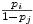
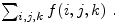

I have left Harvard as of July 1, 2008 to take a position at
NYU.
This website has been cached and left static. Feel free to browse
my
new website,
aka "What the heck is a Clinical Associate Professor?"
02.29.08
Posted in Math, News at 1:29 pm by leingang
This month’s Wired contains an article about the Netflix prize, offering $1,000,000 to the person or team that can improve Netflix’s recommendation engine by 10%. It’s an interesting tale of the frontier of data-centric personal services. The “hero” of the article uses not only mathematical algorithms but psychological concepts when gleaning information about past preferences in order to predict future ones.
For instance, there’s the concept of “inertia,” or another way, relativity, when ranking movies on a simple 1-5 scale. Somebody might give the same movie two different rankings depending on the most recent movie he or she watched. If you see, for instance, Gattaca followed by The Matrix, you might give The Matrix a 4 because you think it’s so much better than Gattaca. But if the previous movie was a 5 (I’ll let you fill in your favorite here), well, maybe The Matrix earns only a 3. Mathematically, we would say that the relationship between the set of movies and a person’s ratings for them may not actually define a function as the purely math models assume.
The other cool thing about this article is that it’s written by mathematician Jordan Ellenberg, with whom I went to grad school back in the day (the nineties).
Blogged with Flock
Tags: math, news, netflix, wired, jordan ellenberg
Permalink
Comments off
02.16.08
Posted in Math, News at 7:14 pm by leingang
A couple of people pointed out this article in USA Today about a mathematics professor who thinks fractions need not be taught in schools.
I know that I work for one of the most famous organizations in the world, and I’m well aware that the things I write on my blog could be misconstrued as coming from my employer or representing positions held by them. So I keep things pretty close to the vest. But I hope I’m not being too controversial when I say that I like fractions and hope they continue to be taught. I’m not quite sure how algebra can be done without fractions (what becomes of rational functions if you can’t abstractly divide polynomials?), and without the skills to algebraically manipulate expressions, calculus becomes very hard to do as well.
Prof. DeTurck compares fractions to roman numerals, which of course were abandoned once the arabic system became more widespread. The arabic system had place value, that is, the idea that the position of a digit within a number changed the value of the number. They also had one of the most important numbers: zero. With these ideas, finitely many symbols can be used to express infinitely many numbers.
The quickest to move to the arabic system from roman numerals were the accountants, and indeed, a big advantage of arabic numerals is the ease of computation. The same could be said of decimals versus factions: it’s usually easier to add decimals. Alexander Hamilton wanted a base ten system for the currency of the United States, rejecting the 12 schillings per pound, 20 pence per schilling system long before the UK themselves did. Computers are built for floating-point arithmetic rather than adding fractions, and so most stock exchanges list decimal prices for commodities now.
But fractions are for more than just arithmetic. And decimals are only useful ways to express numbers when the numbers themselves are expressed as points on a line. But there are other ways that numbers are used. If I show you a pie and offer you 0.25 of it, how would you cut the pie? If you said “I’d cut it in half, then cut one of the halves in half”, then you converted the 0.25 to 1/4 and used the fact that (1/2)(1/2) = 1/4. But if numbers are only lengths, I think the only way to do this is to cut a circular piece out of the center of the pie whose radius is 0.5 of the radius of the whole pie.
And don’t forget that many fractions aren’t expressible exactly in decimals. To get a sixth of the pie (a much more modest slice), you’d have to cut out a circle whose radius is the square root of 0.166666… which is about 0.408248.
So I say, vive les fractions. And mmm…pie….
Blogged with Flock
Tags: fractions, deturck
Permalink
Comments off
01.25.08
Posted in Math, Sports at 8:24 am by leingang
One of my Math 1a students this past term is a member of the new Harvard Sports Analysis Collective. They enjoy sabermetrics and the analogues in other sports. And it’s not just a hobby; a couple of ivy leaguers (Paul DePodesta and Theo Epstein) have gone on to manage major league baseball teams using statistical analysis to change the way players are valued.
I had an interesting discussion on their mailing list about DVOA, a statistic to measure defense in football which I thought I invented  but turned out to have been beaten to the punch by Aaron Schatz several years ago. On a less mathy note, Jason blogged a little bit ago about the single-season touchdown records set recently by Randy Moss and Tom Brady:
but turned out to have been beaten to the punch by Aaron Schatz several years ago. On a less mathy note, Jason blogged a little bit ago about the single-season touchdown records set recently by Randy Moss and Tom Brady:
The previous holder, Jerry Rice, only played 12 games in the year he caught 22 touchdowns (A 24-day players’ strike reduced the 16-game season to 15. The games that were scheduled for the third week of the season were cancelled, and the games for weeks 4-6 were played with replacement players). Thus, Rice actually caught about 0.40 more TDs/game than Moss (about 1.83 vs 1.44). This certainly does not take away from Moss’ accomplishment, nor does it tell us that Rice was more valuable to the 49ers than Moss is to the Pats, or that Rice had the best receiving season ever and Moss had the second best—and this per/game analysis really doesn’t reveal anything new to us. However, it does remind us how great Jerry Rice was, and we can only wonder how many TDs he would have caught that year had he played 16 games. He won the Associated Press Offensive Player of the Year Award this season.
There’s a similar argument on the other end of the pass, and it seems to be a little more heated because it involves current players. Peyton Manning’s achieved his 2004-record 49 touchdown passes in the span of 15 games. His backup played most of the 16th game because it was irrelevant for playoff positioning.
After 15 games, Tom Brady had “only” 48 touchdown passes, one less than Manning at the same point of the season. Thus Peyton did average more touchdowns per game. So some, mostly Colts fans, will argue that Brady didn’t break Peyton’s record.
This is true as long as you change the record in question. Brady didn’t break Peyton’s record of “most touchdown passes in the first 15 games of a season” or “most touchdown passes per game”. But these aren’t records you’ll find in any books.
On the other hand, Peyton’s passer rating that year was 121.1 compared to Brady’s 117.2 this year. These are first and second all-time, and third-place is another four points down (Steve Young in 1994 had a 112.8).
See the NFL’s record book for passers and 2007 passing stats.
Blogged with Flock
Tags: statistics, football, hsac
Permalink
Comments off
01.24.08
Posted in Math at 8:59 pm by leingang
This month I was in beautiful San Diego for the annual Joint Meetings of the American Mathematical Society and the Mathematical Association of America. Now that my finals are over and (almost) graded, I can recap what happened there.
I assisted Holly Zullo, Mark Parker, Kelly Cline, and Derek Bruff (in absentia, but who had the whole idea in the first place!) in a minicourse on classroom voting technologies, otherwise known as “clickers.” We had a great time and our participants loved creating clicker questions for their classes.
I went to some of the Scholarship of Teaching and Learning (SoTL) and Research in Undergraduate Mathematics Education (RUME) contributed paper sessions. One of them I found thought-provoking was “The Effect of Grading Quizzes on Subsequent Student Performance” by John J. Schiller of Temple University. He compared student performance between sections of linear algebra in which students either got graded quizzes with comments, or graded quizzes with no comments, and he found little difference. Other research suggests that ungraded quizzes with comments might have a better effect on student performance than graded ones.
I attended several of the invited addresses, which are usually pretty good. Two of the more notable ones were “4000 years of algebra” by Karen Parshall of the University of Viriginia and “The Mathematics of PageRank” by Fan Chung of UCSD. The PageRank talk was not about how PageRank works (the known parts are a very nice linear algebra application), but about how effective it is. The ideal way to find pages of high PageRank involves finding eigenvectors of a matrix which has about 30 billion rows and columns–that’s 900 quintillion entries. Most of them are zero, but still, this is far beyond the capabilities of modern computers, which can handle matrices about a million square. So PageRank is an approximate solution, but (as Chung has proven mathematically, and Page and Brin have proven financially) a good one.
My favorite recurring session is “Who Wants to Be a Mathematician?” by Mike Breen of the AMS. He brings in area high school students to compete in a math game show for cash and prizes. This year the contestants had their own cheering sections, which added excitement. Breen is a great emcee, having learned from the best. He was on both Wheel of Fortune and Jeopardy! The difference between them, he says, is on Wheel they tell you when to jump up and down and clap.
I also took lots of photos, most of which were of boats, Mexican food, birds of paradise, or sunsets:

Blogged with Flock
Tags: sandiego, jmm, sotl, rume, sunset
Permalink
Comments off
11.29.07
Posted in Math, LaTeX, Web at 9:42 am by leingang
I installed the LatexRender plugin to my WordPress blog to express myself in mathematical notation that HTML alone can’t handle. It runs latex on the server side and serves up an image embedded in the text.
For mathematical bloggers who don’t have access to their webservers (or choose not to get their hands dirty with server-side code), there’s Texify, a nice web service that lets you input LaTeX and get a permalink to a graphic that you can include in your web pages. For instance, I copied-and-pasted some code from a slideshow I’m working on and got this:

I’m impressed that they seem to have enabled the amsmath packages in their backend, so some of the more sophisticated mathematical constructs can be used (I’m using an align* environment and the \\text command up there).
The site also provides code to copy-and-paste into BBCode posts such as you’d find on forums, and even Google Docs!
(HT: Michael Tsai)
Blogged with Flock
Tags: web, math, latex
Permalink
Comments off
11.14.07
Posted in Math, Funny, News at 11:34 am by leingang
Spirit Airlines is running a promotion based on the Fibonacci Sequence.
Cheapano Fibonacci wants you to take advantage of his latest Fabulous Fibonacci Sale. Fares are as low as $1* each way. …$1, $2, $3, $5, $8, $13, $21, and some $34 and $55 fares must be booked on spiritair.com between 12:00 PM ET on November 13, 2007 and 11:59 PM ET on November 14, 2007 for travel on the dates as specified by individual market and by market direction…. Please see the terms and conditions for complete restrictions and details.
Asterisks abound , and you can’t fly any day you want, but the deal is legitimate. For instance, you can fly (if you book today)
- from Fort Lauderdale to Nassau for $1
- from Fort Lauderdale to Orlando for $2
- from Fort Lauderdale to Freeport (Bahamas) for $3
- $5 and $8 fares seem to be missing!
- from Fort Lauderdale to Grand Cayman for $13
- from Boston to Myrtle Beach for $21 (now we’re talking!)
- from Atlanta to Las Vegas for $34
- from Detroit to Cancun for $55
- from Orlando to Agudilla, PR for $89
- from Orlando to Kingston, Jamaica for $144
- or first class for $233
Even though the Fibonacci sequence grows (asymptotically) exponentially, this is still my favorite airline promotion based on an integer sequence.
Blogged with Flock
Permalink
Comments off
10.04.07
Posted in Math, Education, Pop Culture at 10:04 am by leingang
 Today marks the 50th anniversary of the launch of Sputnik 1, a mostly harmless satellite but only the first man-made object to orbit the earth. It had a profound effect not only on world politics but on education in the United States. As written in Air Force Magazine this month:
Today marks the 50th anniversary of the launch of Sputnik 1, a mostly harmless satellite but only the first man-made object to orbit the earth. It had a profound effect not only on world politics but on education in the United States. As written in Air Force Magazine this month:
In beating Washington to the punch in space, the Kremlin really hit us where it hurt—in our technological ego. Sputnik instantly catapulted the Soviet Union onto the world’s scientific top shelf, raising doubts about America’s own standing…After initial soul-searching, the US embarked on a massive and determined space effort. The Pentagon formulated a huge program. On the civilian side, newly created NASA did the same. The aerospace industry exploded. Colleges were flooded with new engineering students eager to take up the Russian challenge. Public education turned hard toward math and science curricula. Sputnik may have started the Space Age, but America created the Space Race. Soon, the US was to leave Moscow in the dust.
Thanks, comrades! But that was 50 years ago—I’m looking forward to the next big push in science and math education. Or, results of it.
Blogged with Flock
Tags: sputnik, education
Permalink
Comments off
08.29.07
Posted in Math at 8:11 am by leingang
No, that was the Rangers over the Orioles by 27 runs. And it inspired Stephen Dubner to blog about the line score in his Freakonomics blog:
If you had to guess when the Rangers scored their runs over 9 innings (the game was in Baltimore, so Texas batted in the top of the 9th), how would you distribute the runs? If I had to do it, my linescore would probably look about like this:
1 2 3 4 5 6 7 8 9
4 3 1 0 5 6 3 5 3
But here is the actual linescore:
1 2 3 4 5 6 7 8 9
0 0 0 5 0 9 0 10 6
The Rangers scored 30 runs in just 4 innings! It’s a good reminder, once again, that the way data plays out in real life is often nowhere near as orderly, predictable, or consistent as you might imagine it to be.
(HT: Sendhil)
technorati tags:baseball, math, random, freakonomics
Blogged with Flock
Permalink
Comments off
07.08.07
Posted in Math, Funny at 7:52 am by leingang
Spotted at xkcd this morning:

Makes me think of my Math S-1ab students as I just gave them this classic problem on a midterm:
Show that there is a number c in between 0 and π/2 such that cos(c) = c.
technorati tags:funny, math, comic, xkcd
Blogged with Flock
Permalink
Comments off
05.23.07
Posted in Math, News, Pop Culture, Math E-304 at 11:55 am by leingang
The 2007 NBA Draft Lottery was last night and has a nice little probability problem in it. Although it’s pretty painful if you’re a Grizzlies or Celtics fan.
Most professional leagues have a policy of awarding the top picks to the worst teams. But the NBA wanted to discourage tanking a season to get a top pick, and so removed this certainty by instituting a draft lottery to award the top three picks. Teams with worse records are weighted to have a higher probability of winning, but the weights are small enough to make the top pick to the worst team far from certain:
Here’s what actually happened, along with the probability of winning for each team:
|
LOTTERY RESULTS
|
|
TEAM
|
REC.
|
ODDS
|
|
|
32-50
|
5.3%
|
|
|
31-51
|
8.8%
|
|
|
30-52
|
11.9%
|
|
|
22-60
|
25.0%
|
|
|
24-58
|
19.9%
|
|
|
28-54
|
15.6%
|
|
|
32-50
|
5.3%
|
|
|
33-49
|
1.9%
|
|
|
33-49
|
1.9%
|
|
|
33-49
|
1.8%
|
|
|
35-47
|
0.8%
|
|
|
35-47
|
0.7%
|
|
|
39-43
|
0.6%
|
|
|
40-42
|
0.5%
|
As you can see, none of the teams with the worst three records (Memphis, Boston, and Milwaukee), and thus the biggest probabilities of winning, ended up with any of the top three picks. Mathematicians often get the FAQ “What are the odds of that?” Well, let’s see.
Let  be the probability that the team with the ith worst record wins the lottery. The second pick is determined by the same rules, except that the team that got the first pick can’t get the second pick. So the probability that team j (i.e., the team with the jth worst record) gets the second pick, given that team i got the first pick is
be the probability that the team with the ith worst record wins the lottery. The second pick is determined by the same rules, except that the team that got the first pick can’t get the second pick. So the probability that team j (i.e., the team with the jth worst record) gets the second pick, given that team i got the first pick is

. The third pick is assigned the same way. So the probability that team
i gets the first pick, team
j gets the second pick, and team
k gets the third pick is
 = p_i \cdot \frac{p_j}{1-p_i} \cdot \frac{p_k}{1-p_i-p_j}\,\,.")
All the other teams are assigned picks according to worst record among those remaining. So there’s no more probability to be determined.
From the above you can see that the probability of the lottery ending up precisely this way is f(6,5,4) = 0.00068228, or .068%. Very unlikely. But so is the most likely event that the worst teams gets the first pick, the second-worst the second pick, and the third-worst the third pick. That’s f(1,2,3) = 1.88%. The more interesting event is that none of the worst three teams got any of the top picks. The probability of that is the sum

over all triples (i,j,k) of distinct elements from the set 4, 5, 6, …, 14. There are (11)(10)(9)=990 such triples. There might be a nice combinatorial way to get a closed-form expression for this sum, or you can just use Mathematica to do it. I got 0.0405467, or 4.05%. Not that likely, but you would expect it to happen about once every 25 years. The lottery in its current form has been around since 1990.
Rich Zuckerman at NBC Sports published a table of the likelihood of all the bottom fourteen teams getting any of the lottery picks. The event that no bottom-three team gets a top-three pick is equivalent to the event that the third-worst team gets the sixth pick (think about that for a while). He’s got the same 4.05% figure in that position.
Is the draft lottery a good idea? The math is there, and those who make the rules should be content with the consequences. If having as “unfair” a distribution of picks as this occuring this often is acceptable to the team management, then they should keep it as it is. But the lottery was instituted to discourage teams from “tanking” (not trying to win games) the rest of the season so as to increase their draft position. I’m not sure it does. In a non-lottery system, the team with the worst record is awarded the first pick. In a lottery system, the team with the worst record is awarded the highest probability of the first pick. Among the available choices, that’s still the most attractive, so bad teams still have the incentive to try to have the worst record. But teams who legitimately “earn” the worst record are no more likely to be rewarded with high draft picks. So this system doesn’t reward the honest, or punish the dishonest, it just makes the crime pay less.
(I said earlier that this is particularly painful to Celtics fans. I live in the Boston area, but I am not a Celtics fan. I do sympathize with them, though. My point of view on the lottery is really only based in mathematics and, I guess, game theory.)
.
technorati tags:math, mathE-304, probability, basketball, nba, lottery
Blogged with Flock
Permalink
Comments off
« Previous entries ·